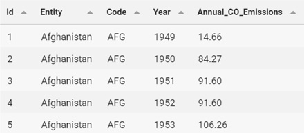

CO2 GAS EMISSIONS
BY INDONESIA
This is my first simple project on MySQL based on Annual CO2 Emissions from all around the world from 1750 to 2017.
.jpg)
This is my first simple project on MySQL based on Annual CO2 Emissions from all around the world from 1750 to 2017. In this project, I will use 3 important tools: First, MySQL Workbench 8.0 CE, to import records from an external file (this case I use csv file from keggle. Thanks to keggle and who posted the data!). Second, Microsoft Excel to prepare and import text file from csv file and to make the graphics of the data. And the last I use Beekeeper Studio as SQL editor.
This project will concern about Indonesia.:- The Annual CO2 Emissions by Indonesia from 1946 – 2017
- The ratio and Annual CO2 Emissions by Indonesia with ASEAN member countries.
- Indonesia is a country that has the largest population in ASEAN. Which means, the mobility in Indonesia is more than other ASEAN member countries.
- But, if compare with population size, why Philippines as the country that has the second largest population in Asean not occupying the second biggest CO2 gas emitter in Asean? It indicates, that Indonesia not really ready to handle CO2 gas emissions from all aspects. We can handle CO2 gas emissions in simple ways like reduce the frequency of using private motor vehicle, throw garbage in its place and not cutting down forests.
First, I download the data from keggle (csv file) and then I import it to excel to make sure my data have no error, at least top 10 - 20 of the data have a good structure. This picture will show you the data before and after I import the data to excel:
More readable and editable right? Then, if you can see the different before and after pictures, at after pictures there are id column and at Annual CO Emissions column was divided by 1000. I tell you why. After I import the data to excel, I realize MySQL only works to import the data if the data have the column that can be consists of Primary Key, so I add the id column to be the primary key. And then, at the annual CO Emissions column the number I divided by 1000. Because, before I divide the number by 1000 and I import the data to MySQL, it takes a long time to import the data to MySQL. But that’s not the big problem. I can modify it at MySQL.
After that, I make the database in MySQL and the table matches the column in the previous file. To make the database I made from MySQL’s option, so I don’t need to make the queries to make the database. Then I make the table named gascooemission and use query like this:
CREATE TABLE gascooemission( id INT PRIMARY KEY, Entity VARCHAR(50), Code VARCHAR(30), Year INT, Annual_CO_Emissions DECIMAL(10,02));
And this is the sample of data or head data:
SELECT * FROM gascooemission LIMIT 5;

Then, it's better to check the data there is null or not. Just to make sure, because the data has more than 20000 rows.
SELECT * FROM gascooemission WHERE id <> NULL OR Entity <> NULL OR Code <> NULL OR Year <> NULL OR Annual_CO_Emissions <> NULL;
Since there are no null values we can safely proceed with the next steps.
The Annual CO2 Emissions by Indonesia from 1946 – 2017
The data is available from 1889, but I choose from 1946 because that year was 1 year after Indonesia declaring the independence. Oh, remember the Annual_CO_Emissions was divided by 1000? Let's make the new column to show how if the Annual_CO_Emissions not divided by 1000 (I know it's a little bit different, but it's not a big problem. The data still shows the actual conditions):
SELECT g.*, (g.Annual_CO_Emissions * 1000) AS Annual_CO_Emissions_in_Tonnes FROM gascooemission g WHERE g.entity = 'Indonesia' AND YEAR BETWEEN 1946 AND 2017;
The graphics show the total CO2 by Indonesia in 1946 – 2017 keep increasing until 2012 have the highes total, and then the total CO2 decreasing.
The ratio and Annual CO2 Emissions by Indonesia with ASEAN member countries
The Association of Southeast Asian Nations (ASEAN) is a regional grouping that promotes economic, political, and security cooperation among its ten members: Brunei, Cambodia, Indonesia, Laos, Malaysia, Myanmar, the Philippines, Singapore, Thailand, and Vietnam. The data will shown from 1999 to 2017. 1999 was chosen because Cambodia just joined in that year.
SELECT g.Entity, g.Code, SUM((g.Annual_CO_Emissions * 1000)) AS Annual_CO_Emissions_in_Tonnes FROM gascooemission g WHERE g.entity REGEXP 'indo|malay|singa|thai|Philippines|brunei|viet|Laos|Myan|Cambo' AND YEAR BETWEEN 1999 AND 2017 GROUP BY g.Entity ORDER BY Annual_CO_Emissions_in_Tonnes DESC;The geo chart show that Indonesia is the biggest CO2 gas emitter in ASEAN. It can reveal several causes: